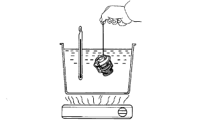
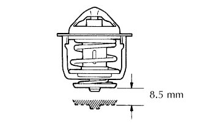

VAN HẰNG NHIỆT > KIỂM TRA |
| 1. KIỂM TRA VAN HẰNG NHIỆT |
|  |
Nhúng van hằng nhiệt vào nước và đun nước nóng từ từ.
Kiểm tra nhiệt độ mở van hằng nhiệt.
|  |
Kiểm tra độ nâng van.
Kiểm tra rằng van đóng hoàn toàn khi van hằng nhiệt ở nhiệt độ dưới 77°C (171°F).
Nếu nó không đóng hoàn toàn, hãy thay thế van hằng nhiệt.